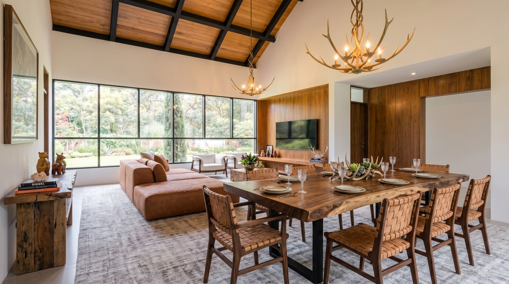
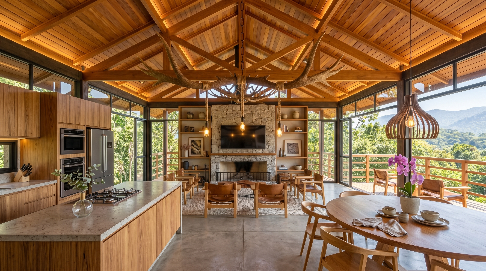
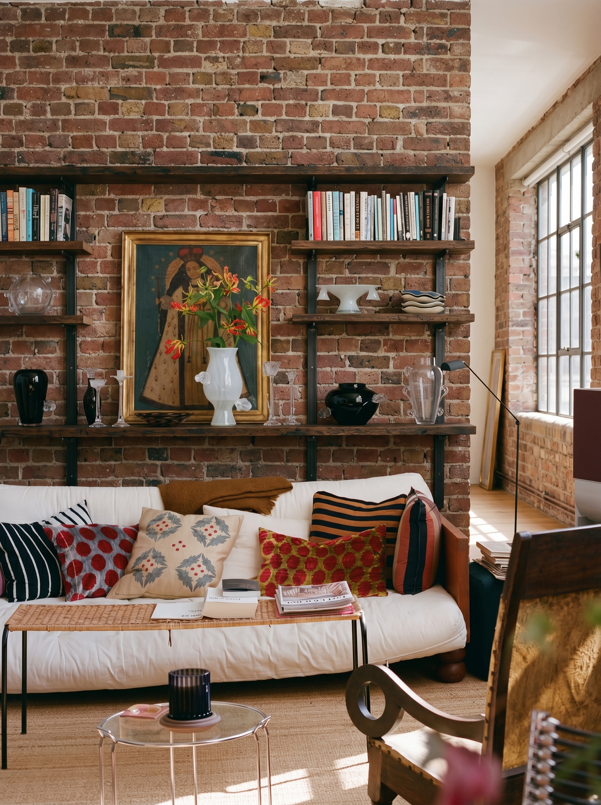

.jpeg)


Arquitetura com critério
Cada espaço pede uma direção.
Sobre Marcia Nath
Marcia Nath
Projetos de arquitetura para quem busca uma casa bonita, funcional e coerente com a vida real, sem abrir mão de personalidade.
Cada escolha é conduzida com critério: da leitura da rotina aos materiais, da luz aos detalhes que fazem o espaço funcionar melhor. O resultado é um projeto com clareza, presença e segurança para investir no que realmente transforma o morar.
Conheça maisVamos trabalhar juntas?
O primeiro passo é entender o que você quer transformar.
Compartilhe o momento da obra, o tipo de ambiente e o que hoje não funciona como deveria. A partir desse primeiro briefing, fica mais simples avaliar caminhos, prioridades e o formato ideal de projeto.
01
Espaço
Casa, apartamento, fachada, interiores ou ambiente comercial que precisa de direção.
02
Momento
Ideia inicial, reforma, obra em andamento ou etapa de escolhas e acabamentos.
03
Desejo
O que você quer valorizar, resolver e sentir ao viver ou apresentar o espaço.
Inspiração
Blog
Arquitetura para valorizar sua rotina, seu imóvel e o seu modo de viver.

TendênciasTendências de Arquitetura Residencial para 2026
Conforto térmico, natureza integrada, materiais naturais e tecnologia discreta orientam casas mais duráveis e preparadas para a rotina.
Ler artigo
AutomaçãoAutomação Residencial Vale a Pena?
Iluminação, climatização, segurança e cenas automatizadas fazem sentido quando são previstas no projeto e simplificam o uso da casa.
Ler artigo